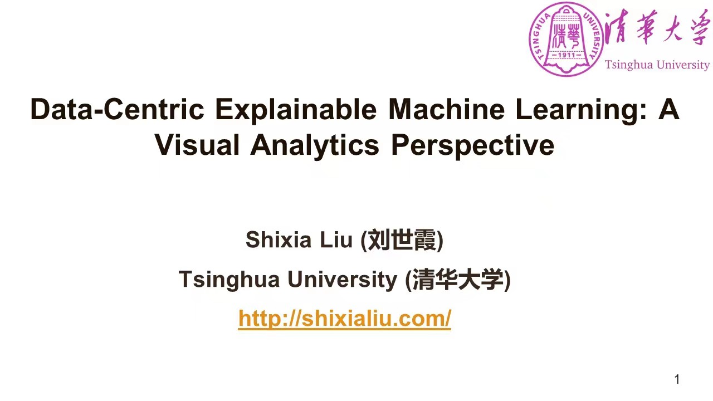
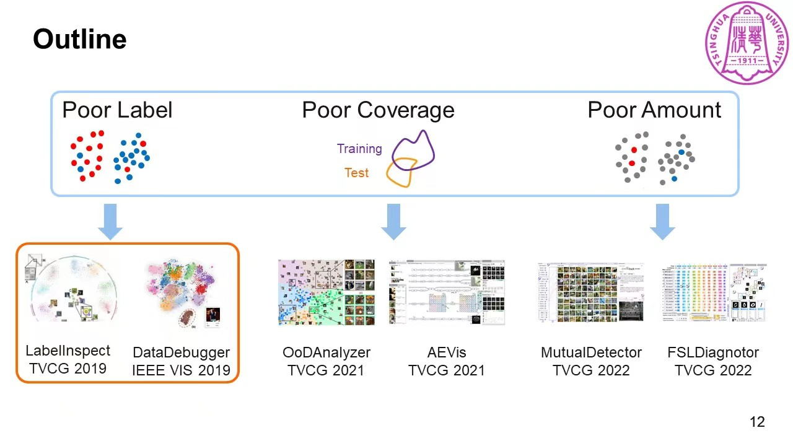
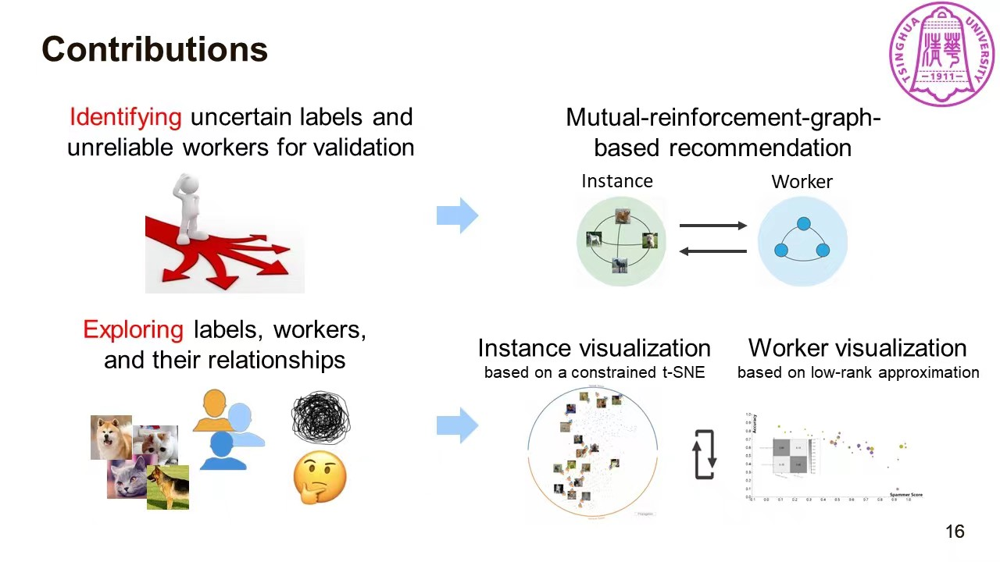
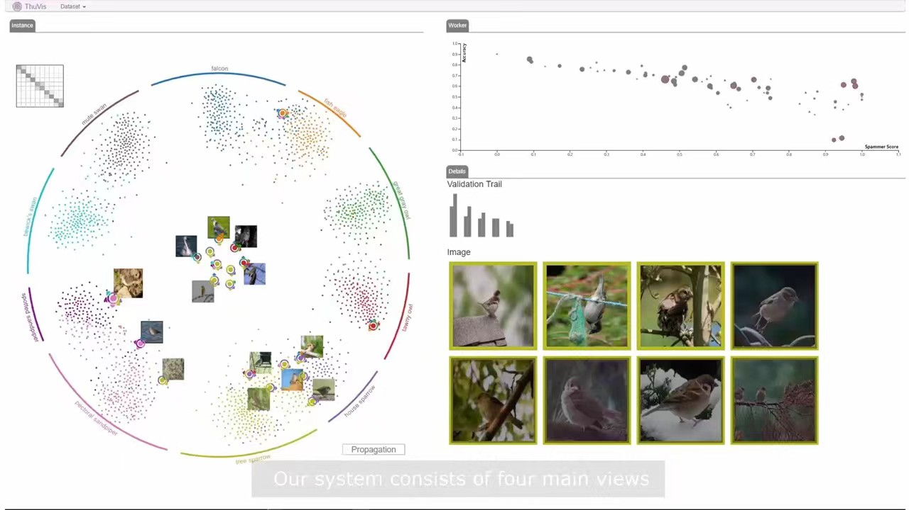
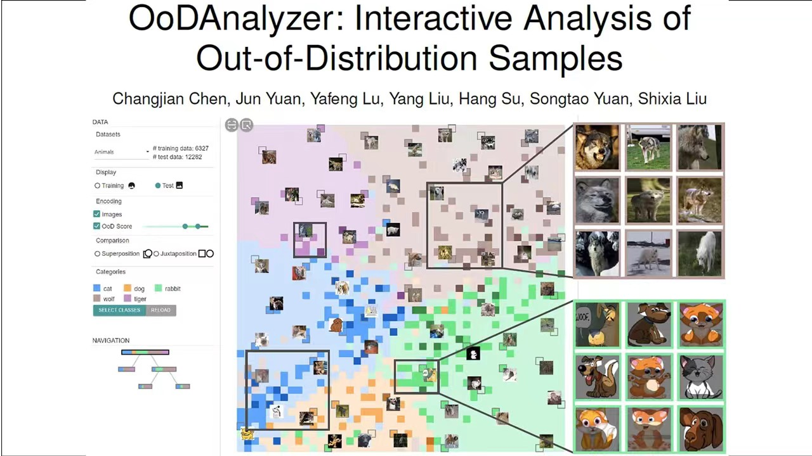
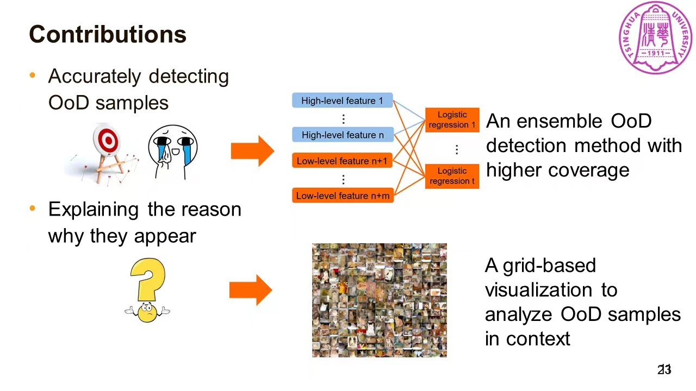
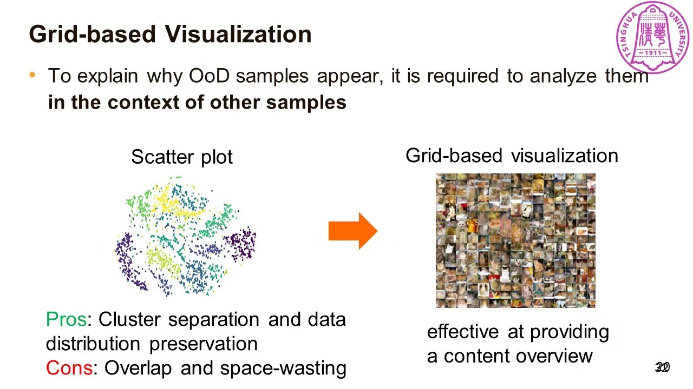
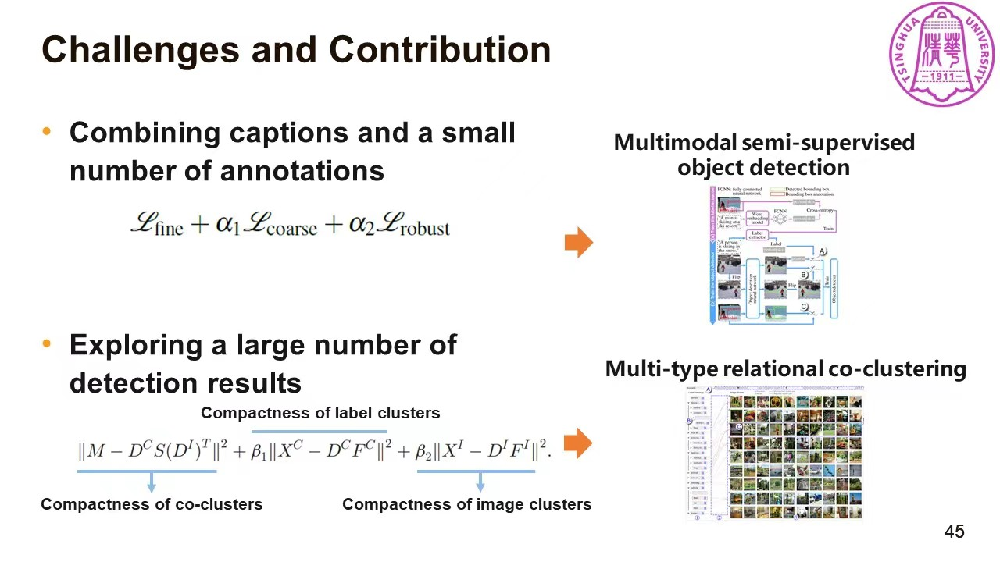
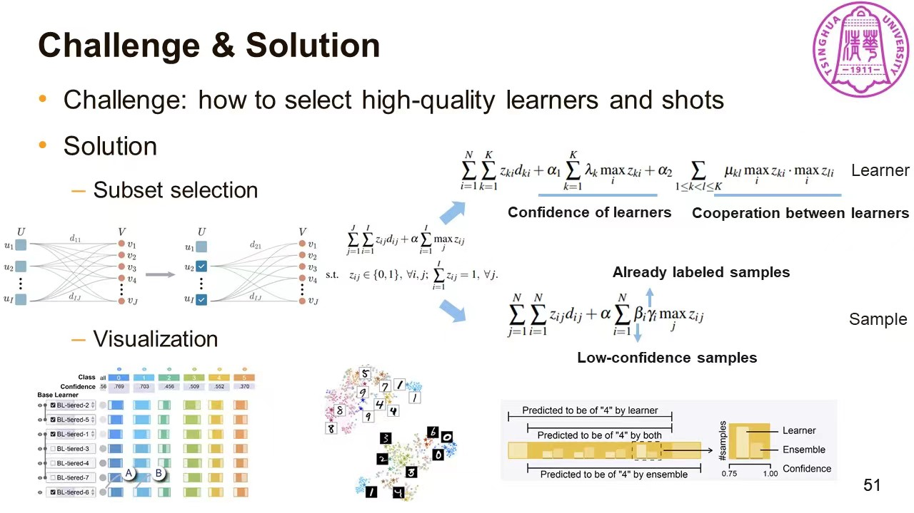
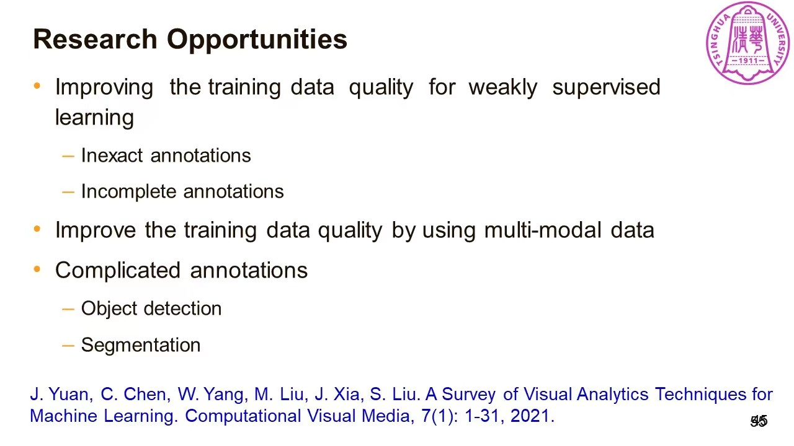

2022年11月1日星期二上午，HKUST-CIVAL课题组邀请到清华大学软件学院刘世霞教授为香港科技大学（广州）数据科学与分析学域做特邀报告。
刘世霞教授的主要研究方向是可解释机器学习，文本可视分析和文本挖掘。近年来在ACM/IEEE Transactions和CCF A 类会议上共发表论文60余篇，包括1篇ESI热点论文和3篇高被引论文；获IEEE VIS 2014，2020和2021最佳论文提名奖。曾担任 CCF A类会议 IEEE VIS(VAST) 2016和 2017的论文主席，IEEE VIS 2020-2023指导委员会委员；她还担任 IEEE Transactions on Visualization and Computer Graphics 副主编，以及Artificial Intelligence (CCF A)和ACM Transactions on Interactive Intelligent Systems的编委。 刘世霞教授是国家级人才计划入选者 (2020)，并入选IEEE Visualization Academy (可视化名人堂，2020)和IEEE Fellow (2021)。在本年度的IEEE VIS会议上，刘世霞教授因在文本可视分析和基于可视化的可解释机器学习方面的杰出贡献，被授予IEEE可视化技术成就奖 (IEEE VGTC Visualization Technical Achievement Award)。该奖项被视为可视化领域的最高奖项之一。
本次研讨会中，刘世霞教授带来了题为《Data-Centric Explainable Machine Learning》的精彩报告。
机器学习方法在数据科学实践中往往被当作黑盒来使用。同时，针对机器学习方法的解释性工作一直都是学界的研究重点。从高层次的抽象来看：AI Sytem = Data + Model (Algorithm)，而模型性能的上界（upper bound）是由数据质量来决定。刘世霞教授对比了多个场景下改善模型与改善数据质量对Baseline的提升，有力地说明了提升数据质量对于优化机器学习方法性能的重要意义：Data is the King of Artificial Intelligence；Data is Food for AI。

然而，相对于模型方法的研究，针对训练数据的研究则数量较少。刘世霞教授进一步指出：将可视分析与数据分析方法相结合，能同时最大化二者的价值。
刘世霞教授指导的THU-VIS课题组，针对数据低质的问题做出了一系列影响重大的工作。这些工作有着相同的出发点：低质量的数据会降低模型的性能，在高风险的应用中将带来严峻的问题。具体来说，数据的低质量体现在三个方面：Poor Label, Poor Coverage 以及 Poor Amount。刘世霞教授从这三个方面来介绍THU-VIS近年的工作。

刘老师首先介绍了LabelInspect，该工作能帮助分析人员识别标签不确定的数据以及不可靠的标签标注者，从而对这些不确定、不可靠的部分重新验证。LabelInspect同时支持探索数据标签，标签标注者以及二者之间的关系。具体实现层面，LabelInspect主要实现了基于t-SNE的Instance Visualization以及基于low-rank approximation的Woker Visualization。多个Case Study 表明：LabelInspect能有效降低validated instance的比例，从而减少数据专家的70%以上的工作量。


针对Poor Coverage的问题，刘世霞教授提出了OoDAnalyzer来帮助检测Out-of-Distribution(OoD)的数据。该工作主要贡献有：提供了在具体背景中解释OoD样本的可视分析工具，帮助用户有效地分析它们；受Hall定理启发，提出了加速的网格布局可视化方法；有效提升了针对OoD样本推荐的集成OoD样本检测



第三部分，刘世霞教授简要介绍了针对 Poor Amount 问题提出的MutualDetector和FSLDiagnotor。MutualDetector提出的背景是：训练高性能的目标检测模型需要大量的bounding box标注，而这一类标注数据的成本是昂贵的。近期的研究主要寻求免费的image caption数据来训练目标检测模型。MutualDetector主要贡献有：提出了一种半监督的目标检测方法，利用caption和少量bounding box标注来提高检测性能；提出了node-link-based set visualization，用于解释提取的标签和包含检测对象的图片之间的关系；提出一个集成了目标检测方法的交互式可视化分析工具，以促进对数据标签和bounding box标注的探索和验证。

FSLDiagnotor主要解决了“how to select high-quality learners and shots”的问题。

最后，刘世霞教授也展望了一些未来的研究机会：为弱监督学习提升训练数据质量、使用多模态数据来提升训练数据质量，以及解决一些复杂标注工作中的问题，如目标检测和图像分割。

提问环节，数据科学与分析学域的同学、老师与刘世霞教授进行了热烈讨论。王炜教授在 Understanding high-dimensional data 方向有着丰富的研究经验，针对t-SNE算法结果作为网格算法输入的合理性提出了疑问，主要担忧在于t-SNE算法本身具有结果取局部最优的随机性以及降维所带来的信息损失。客观来说，在OoDAnalyzer工作的背景下，t-SNE算法是一种可用的“权宜之计”。针对此类问题，是否能有更好的解决方法，值得后续的研究工作来进一步深挖、讨论。
刘世霞老师课题组开源了大量帮助提升数据质量的可视分析工具，均可以在https://github.com/thu-vis中找到。
刘世霞教授报告中涉及的主要参考文献：
[1] M. Liu, L. Jiang, J. Liu, X. Wang, J. Zhu, and S. Liu, “Improving Learning-from-Crowds through Expert Validation,” in Proceedings of the Twenty-Sixth International Joint Conference on Artificial Intelligence, Melbourne, Australia, Aug. 2017, pp. 2329–2336. doi: 10.24963/ijcai.2017/324.
[2] S. Liu, C. Chen, Y. Lu, F. Ouyang, and B. Wang, “An Interactive Method to Improve Crowdsourced Annotations,” IEEE Transactions on Visualization and Computer Graphics, vol. 25, no. 1, pp. 235–245, Jan. 2019, doi: 10.1109/TVCG.2018.2864843.
[3] S. Xiang, X. Ye, J. Xia, J. Wu, Y. Chen, and S. Liu, “Interactive Correction of Mislabeled Training Data,” in 2019 IEEE Conference on Visual Analytics Science and Technology (VAST), Oct. 2019, pp. 57–68. doi: 10.1109/VAST47406.2019.8986943.
[4] C. Chen et al., “OoDAnalyzer: Interactive Analysis of Out-of-Distribution Samples,” IEEE Transactions on Visualization and Computer Graphics, vol. 27, no. 7, pp. 3335–3349, Jul. 2021, doi: 10.1109/TVCG.2020.2973258.
[5] K. Cao, M. Liu, H. Su, J. Wu, J. Zhu, and S. Liu, “Analyzing the Noise Robustness of Deep Neural Networks,” IEEE Transactions on Visualization and Computer Graphics, vol. 27, no. 7, pp. 3289–3304, Jul. 2021, doi: 10.1109/TVCG.2020.2969185.
[6] C. Chen et al., “Towards Better Caption Supervision for Object Detection,” IEEE Transactions on Visualization and Computer Graphics, vol. 28, no. 4, pp. 1941–1954, Apr. 2022, doi: 10.1109/TVCG.2021.3138933.
[7] W. Yang et al., “Diagnosing Ensemble Few-Shot Classifiers.” arXiv, Jun. 09, 2022. Accessed: Nov. 06, 2022. [Online]. Available: http://arxiv.org/abs/2206.04372
[8] C. Chen et al., “Interactive Graph Construction for Graph-Based Semi-Supervised Learning,” IEEE Transactions on Visualization and Computer Graphics, vol. 27, no. 9, pp. 3701–3716, Sep. 2021, doi: 10.1109/TVCG.2021.3084694.